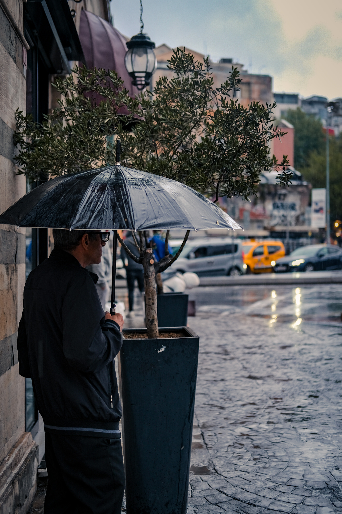

Volume 3

Sitting on my veranda, sipping my morning caffeine dose, Rhyming with the rhythm of the first light's gentle droplets, Falling lazily upon the eager earth I've always yearned to own. Oh, how I long for more Junes throughout the year!
June, the emblem of a second life, Another chance to rectify past mistakes, To embark upon a new chapter of love and hope. June will see, adorable little ones stumble into the haunted house (called "School"), Parallely, June will also witness, curious tots scurry through the market, Gathering school supplies in their shopping carts.
June evokes fond memories of my mischievous childhood fairies, Betcy, Tacy, and Tib, who whimsically exclaimed, "It is June, and the world is perfumed with the delicate scent of roses. The sunshine cascades like powdered gold upon the grassy hillside."
On June 12 as we honor the enduring spirit of Anne Frank, whose words penned in her diary continue to touch hearts and inspire generations.Let us kindle the flame of hope she ignited through her poignant reflections, reminding us to cherish the power of compassion, resilience, and the pursuit of a more inclusive world. It is the perfect dawn to voice yourself.
On June 19 as we honor the lovable, lasagna-loving feline, Garfield, on National Garfield the Cat's Day! Let's embrace our inner couch potatoes, indulge in some delicious lasagna, and share a laugh or two with Garfield's witty and relatable antics. It's a purr-fect day to celebrate the world's most famous orange tabby and enjoy the humor and charm he brings to our lives.
June, with its extended rain-time and boundless opportunities, serves as a reminder to embrace every moment and live life to the fullest. Let us wholeheartedly adopt this spirit of seizing the day, spreading love and kindness in every step we take. Each day presents us with a fresh canvas to paint beautiful memories and contribute positively to the world around us.Let's use this God's gift for the betterment of ours and our neighbours souls.
SCHOLARSHIP
Zolve Scholarship is applicable for applicants who are non-US citizens moving to or moved to the US for higher education in 2023IET India Scholarships are closing applications from 1st, 2nd, 3rd and 4th year undergraduate engineering students from all AICTE approved institutions on 15th June 2023.
FAEA invites application for scholarships for the year 2023-24 to pursue undergraduate studies in arts/commerce/science/medical/engineering and other technical and professional disciplines at any university/institution/college in India.
INTERNSHIPS
AICTE Civil Engineering Internship CEI is now open for ITI, Diploma, B.E. or B.T.ech. degree holders or freshers.